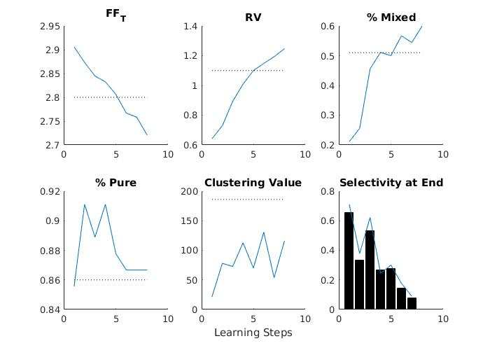

This is the readme for the models associated with the paper: Lindsay GW, Rigotti M, Warden MR, Miller EK, Fusi S (2017) Hebbian Learning in a Random Network Captures Selectivity Properties of Prefrontal Cortex. J Neurosci This archive was contributed by G Lindsay. You will need to first install the highdim matlab package by downloading the matlab scripts and adding the toplevel folder to your matlab path: https://github.com/brian-lau/highdim Then run this code in matlab by typing on the command line: runHebbian After a minute or so you should see a graph like:  The first 5 graphs are similar to Figure 6A, except the values are plotted only for a single network (rather than the average values over many networks, for different learning variants). The final graph (lower right of the graphs) is similar to Figure 6C(left), but again only for a single network, and represents the model results after the final learning step. In all, black lines/bars are data values.